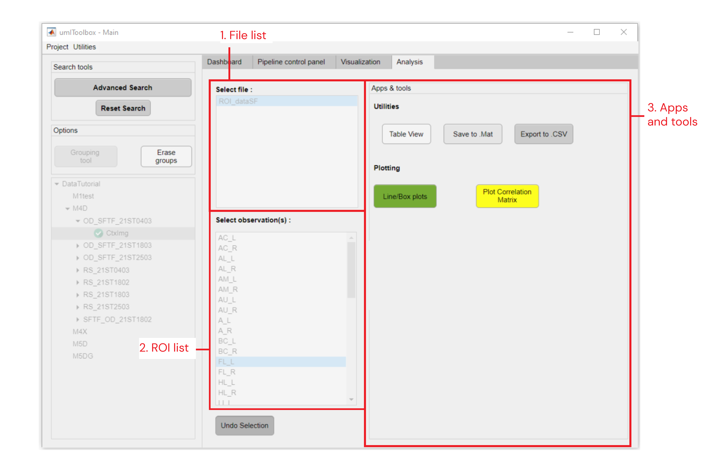
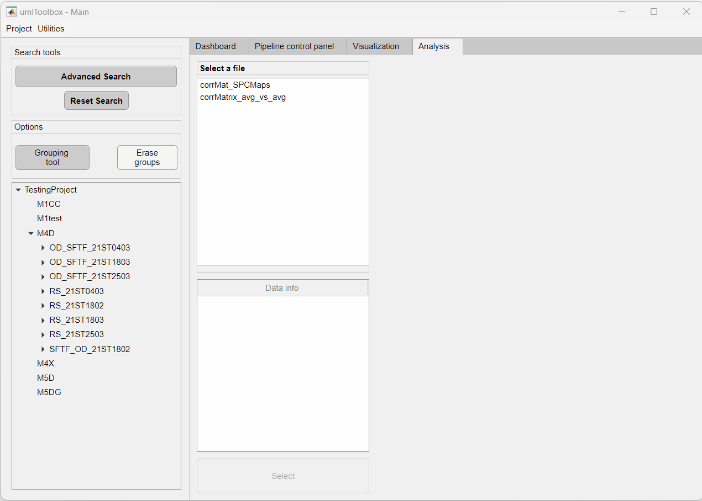

This tab is dedicated to the visualization and analysis of grouped data. The data used in this tab consist of the .mat files generated by the Analysis functions of umIT.

Main components of the Analysis tab.
List of .mat files located in the folders of the selected objects.
Click on "Select" to load the data from the selected file from the File list and access the Apps & Tools panel. To Select a new set of data, click on "Undo" and start over.
This table gives an overview of some features of the selected data. For instance, it shows if the selected data has equal dimensions, if it is exportable to .CSV and it's data type and dimension names. These features will determine the availability of some tools from the Apps & Tools panel.
Note
This table is updated only when the Select button is pressed. Thus, it describes the "original" data. This means that the table is not updated after changes on the data using the utilities tools (e.g. Avg Acquisitions or Change Lists).
In this panel, there are options to export the data outside umIT as well as to merge acquisitions and create subsets of observations and/or events. Here is the list of available options (click on the links for further details):
Here, the list of unique values of observations and/or events are shown. The elements in these lists will be those to be used by the utilities and plotting apps. To rearrange and/or subset these lists, use the Change lists tool.
This panel contains the plotting apps currently available. These tools allows one to exploredifferent types of data and compare between experimental groups.
The panel contains options to create and manage groups.
This button launches the Data grouping tool. This tool allows the segregation of the elements from the object tree into two or more groups.
Click here for more info about how to use the Data grouping tool!
Click here, to erase the groups created using the Data grouping tool and restore the object tree to the original list.
In order to have access to the Apps & Tools panel, one has to:
Note
Once the file is selected in the Select a file list, a green check icon will appear on the items from the object tree containing the selected file. Review the object tree to be sure of which objects are selected before clicking on the Select button on the bottom of the Analysis tab.

Example of data selection for analysis. Note that the items from the object tree containing the selected files are highlighted with a green check icon.